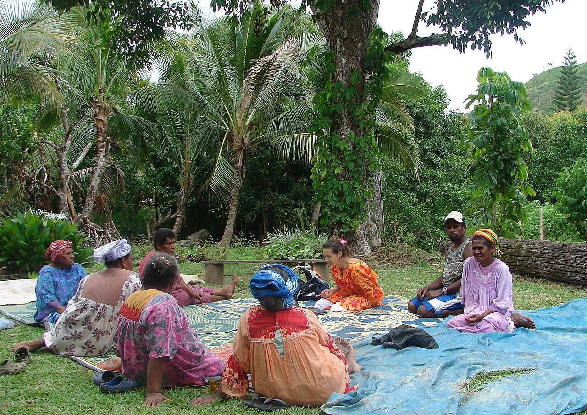
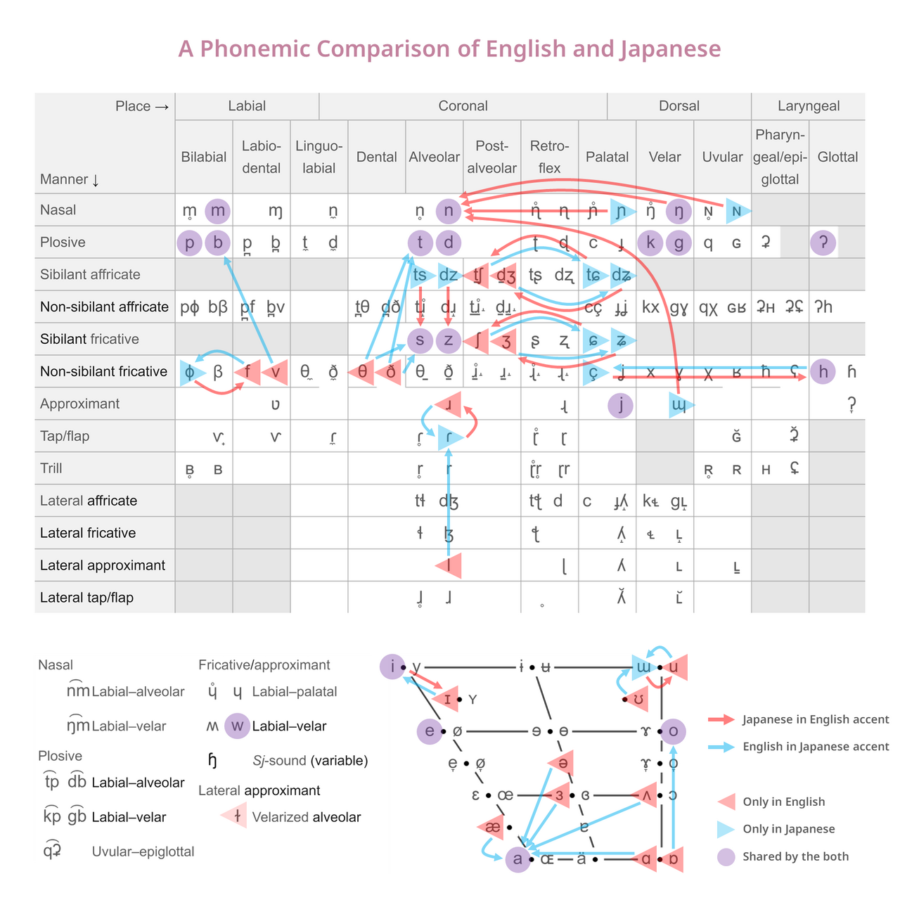
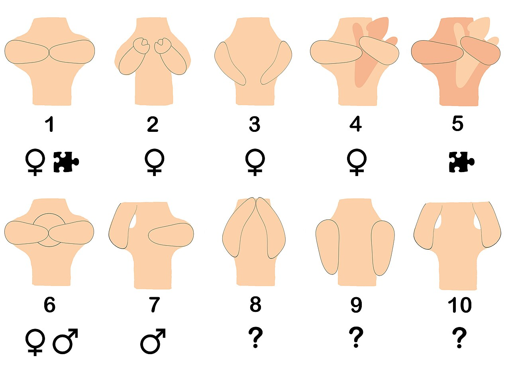
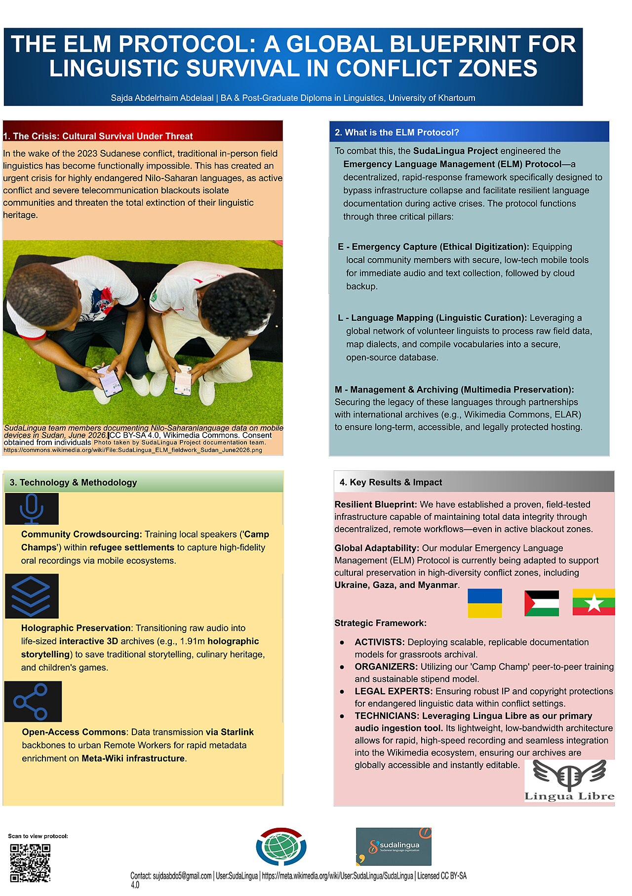

Language & Communication
Every human society runs on talk. We greet, argue, gossip, pray, name our children, curse our enemies, and pass down what we know — almost entirely through language. Yet language is more than a tool for shipping messages from one head to another: it is a cultural artifact, learned like kinship or ritual, and it quietly shapes how a community carves up the world. This chapter asks what language is, how it works, whether it molds thought, how much of communication happens without words at all, and why languages are born, split, mingle, and die.
By the end of this chapter you can
- Define linguistic anthropology and place it among the four fields, naming Boas, Sapir, and the ethnography of communication.
- Distinguish the emic and etic perspectives and apply them to the study of speech.
- List the design features that make human language distinctive, especially arbitrariness, productivity, displacement, and duality of patterning.
- Name the structural levels of language — phoneme, morpheme, syntax, semantics, pragmatics — and give an example of each.
- Explain the Sapir-Whorf hypothesis and contrast strong linguistic determinism with weak linguistic relativity.
- Describe nonverbal communication: kinesics, proxemics, and paralanguage, and why gestures do not translate across cultures.
- Distinguish dialect, register, code-switching, and diglossia, and explain how pidgins become creoles.
- Explain language endangerment and shift, and what revitalization efforts try to recover.
Section 1Language in its cultural home

The fourth field
American anthropology is traditionally built on four fields — cultural, archaeological, biological, and linguistic anthropology — and it was Franz Boas, the founder of the American tradition, who insisted that language belonged at the center of the discipline. Boas argued that you cannot understand a people's categories of thought without their words for things, and that every language must be described on its own terms rather than forced into the grammar of Latin or English. His Handbook of American Indian Languages (1911) treated Indigenous North American languages as sophisticated systems worthy of careful study — a direct rebuke to the racist evolutionary ranking of languages common in his day. His student Edward Sapir, and Sapir's student Benjamin Lee Whorf, carried that project forward into the question of how language and worldview intertwine.
Linguistic anthropology is not the same as linguistics narrowly conceived. A linguist may study the grammar of a language as an abstract system; the linguistic anthropologist studies language in use — who says what, to whom, when, and to what social effect. Language is treated as a form of social action and a carrier of culture, so a wedding toast, a courtroom cross-examination, a market haggle, and a grandmother's bedtime story are all data.
How the fieldworker listens
Like all anthropology, the work rests on participant observation and long immersion. The descriptive linguist also uses elicitation — sitting with a fluent speaker, recording words and sentences, and slowly reconstructing the sound system and grammar — and increasingly does so as collaborative, community-based documentation, training local speakers to record and archive their own language. Two lenses guide the analysis. The emic perspective (a term Kenneth Pike coined from phonemic) captures the categories that matter to insiders — the sounds and distinctions a speaker hears as meaningful. The etic perspective (from phonetic) records everything an outside observer can measure, whether or not locals treat it as significant. Good ethnography of speech moves between the two.
The great functionalist Bronislaw Malinowski, working in the Trobriand Islands, noticed that much talk does no informational work at all. His term phatic communion names speech whose point is social bonding rather than content — “Cold enough for you?” on a winter morning is not a weather report but a small act of solidarity. Dell Hymes later formalized this into the ethnography of communication, arguing that a competent speaker needs more than grammar: they need communicative competence, the culturally specific knowledge of how to speak appropriately in each setting. Clifford Geertz's semiotic view of culture — culture as “webs of significance” that people spin and then read — fits language especially well, because language is the loom on which many of those webs are woven.
| Subfield | Central question | A key figure |
|---|---|---|
| Descriptive (structural) | How is this language built — its sounds, words, grammar? | Franz Boas |
| Historical | How are languages related, and how do they change over time? | Edward Sapir |
| Sociolinguistics | How does speech vary with class, gender, age, and setting? | William Labov |
| Ethnography of communication | What does a speaker need to know to talk appropriately here? | Dell Hymes |
- Linguistic anthropology is one of the four fields; Boas put language at anthropology's core and insisted each language be described on its own terms.
- The focus is language in use — speech as social action — not grammar as an abstract system.
- Emic (insider) and etic (observer) perspectives, from Pike's phonemic/phonetic, guide analysis.
- Malinowski's phatic communion and Hymes's communicative competence show that speaking is a social skill, not just a code.
Section 2What makes human language unique

Hockett's design features
Many animals communicate, but human language is different in kind, not just degree. The linguist Charles Hockett catalogued a set of design features to pin down that difference. Four are worth memorizing. Arbitrariness: there is no natural link between a word's sound and its meaning — nothing dog-like about the sounds in dog, chien, or perro — a point Ferdinand de Saussure made central to modern linguistics (onomatopoeia is the partial exception). Productivity (or openness): from a finite stock of words and rules, speakers generate an infinite number of sentences never uttered before, and hearers understand them instantly. Displacement: we can talk about what is not here and now — last year's harvest, a spirit world, next season, a purely hypothetical unicorn. Duality of patterning: a small set of meaningless sounds (perhaps a few dozen) recombines into thousands of meaningful words — the reason a language can be both economical and endless.
These features let us do things no other species' signals can. A vervet monkey has distinct alarm calls for leopards, eagles, and snakes — a genuine, studied communication system — but it cannot combine those calls to warn of “a leopard that was here yesterday” or invent a signal for a brand-new predator. Honeybees encode direction and distance in a waggle dance (decoded by Karl von Frisch), an astonishing feat — but the system is closed. Human language is open and learned: a baby raised in any community will acquire that community's language, showing that the content is culturally transmitted, not genetically fixed.
The levels of structure
Linguists dissect language into nested levels. Phonology studies the phonemes, the sounds a language treats as distinct: English hears l and r as different phonemes (light vs right), while Japanese does not, which is why the contrast is famously hard for Japanese learners of English. A sound that varies without changing meaning is an allophone — the puff of air on the p of pin versus spin is invisible to English speakers but phonemic elsewhere. Morphology studies morphemes, the smallest meaningful units: cats is two morphemes, cat plus a plural -s. Syntax is the grammar that orders words into phrases and sentences; semantics is meaning; and pragmatics is meaning-in-context — how “Can you pass the salt?” works as a request, not a question about ability.
| Level | Unit of study | Example |
|---|---|---|
| Phonology | Phonemes (distinctive sounds) | /l/ vs /r/ distinguishes light from right |
| Morphology | Morphemes (smallest meaningful units) | un- + break + -able |
| Syntax | Rules ordering words | “The dog bit the man” ≠ “The man bit the dog” |
| Semantics | Literal meaning | bank = riverside or money-house |
| Pragmatics | Meaning in context | “Can you pass the salt?” = a request |
How much of this structure is universal? Noam Chomsky argued that humans are born with an innate Universal Grammar — a species-wide template that makes rapid language learning possible and predicts deep commonalities across all languages, including recursion, the embedding of phrases inside phrases. Anthropological linguists have pushed back with data from the field: Daniel Everett's long work with the Pirahã of the Amazon led him to claim their language lacks recursion and number words, reopening a fierce debate about how far culture can reshape the human language faculty. Whichever way that debate settles, it shows a healthy tension between the universalist and relativist instincts in the study of language.
- Hockett's design features — especially arbitrariness, productivity, displacement, and duality of patterning — set human language apart from animal signaling.
- Language has nested levels: phoneme → morpheme → syntax → semantics → pragmatics.
- A phoneme is a meaning-distinguishing sound; sounds that vary without changing meaning are allophones.
- Chomsky's Universal Grammar claims an innate template; Everett's Pirahã work is a leading anthropological challenge to it.
Section 3Does your language shape your world?
The Sapir-Whorf hypothesis
Does the language you speak shape the way you think? The idea is known as the Sapir-Whorf hypothesis, or linguistic relativity, after Edward Sapir and Benjamin Lee Whorf. It comes in two strengths. The strong version, linguistic determinism, holds that language determines thought — that you literally cannot conceive what your language has no words for. Almost no scholar accepts the strong version today; people invent new words, borrow them, and think perfectly well about things their language handles clumsily. The weak version, linguistic relativity, holds that language influences habitual thought, nudging attention and memory along the grooves a grammar makes convenient. The weak version is well supported.
Whorf's own famous example — that the Hopi language encodes a different concept of time — has been heavily criticized (the linguist Ekkehart Malotki documented Hopi time expressions Whorf overlooked), and it stands as a caution against overreaching. But careful modern experiments have revived the field with better evidence for the modest, weak claim.
What the evidence actually shows
Consider color. Brent Berlin and Paul Kay showed in 1969 that basic color terms are not wholly arbitrary — languages add them in a largely predictable order — a finding on the universalist side. Yet later work restored a role for relativity: Russian speakers, who have separate basic words for lighter blue (goluboy) and darker blue (siniy), discriminate blues slightly faster at that boundary than English speakers do. Consider space. Speakers of Guugu Yimithirr in Australia do not say “the cup is to your left”; they use absolute cardinal directions — “the cup is to your north” — and, as Stephen Levinson documented, they maintain a flawless sense of orientation even indoors, because the grammar forces them to track it constantly. Consider grammatical gender: in experiments by Lera Boroditsky and colleagues, German and Spanish speakers described the same objects with adjectives colored by whether the noun was grammatically masculine or feminine in their language.
The Amazonian Amondawa pictured above became a striking case: researchers reported that the language lacks the abstract “time-as-space” metaphors so natural in English (we “look forward to” a “long” afternoon), suggesting that ways of talking about time can vary far more than English speakers assume. None of this means the Amondawa cannot understand time — it means the habitual conceptual toolkit a language hands you is real, if not a prison.
| Version | Claim | Status |
|---|---|---|
| Linguistic determinism (strong) | Language determines thought; you cannot think what you cannot say | Rejected |
| Linguistic relativity (weak) | Language influences habitual attention and memory | Supported by evidence |
| Universalism | Deep cognitive categories are shared across humanity | Partly supported (e.g., color hierarchy) |
- The Sapir-Whorf hypothesis comes in a strong (determinism, rejected) and a weak (relativity, supported) form.
- Color research (Berlin & Kay) supports universals; Russian-blues and other studies restore a role for relativity.
- Grammar that requires tracking something — like Guugu Yimithirr's cardinal directions — shapes habitual attention.
- Language is best seen as a lens that tilts thought, not a cage that determines it.
Section 4The conversation without words

Kinesics, proxemics, paralanguage
A great deal of what we communicate never becomes a word. Nonverbal communication covers the body's whole repertoire, and anthropologists divide it into a few domains. Kinesics, a term from Ray Birdwhistell, is the study of body motion — posture, facial expression, eye behavior, and gesture. Proxemics, coined by the anthropologist Edward T. Hall, is the culturally patterned use of space: Hall distinguished intimate, personal, social, and public distances and showed that “the right distance” for a conversation differs sharply between, say, high-contact Mediterranean or Latin American norms and lower-contact northern European ones. Stand too close and you seem pushy; too far and you seem cold — and the same physical gap reads differently in each culture. Paralanguage is the vocal wrapping around words: pitch, loudness, tempo, tone, voice quality, and even silence, which in many communities is a comfortable, meaningful part of conversation rather than an awkward gap to fill. Keith Basso's classic study of the Western Apache showed that silence there is the appropriate response in situations of social uncertainty — meeting strangers, greeting a relative returned from a long absence, sitting with the bereaved — so what an outsider reads as coldness is in fact courtesy.
Why a gesture will not translate
Gestures feel natural, so travelers assume they are universal — a costly mistake. Paul Ekman and Wallace Friesen sorted gestures into types; the most treacherous are emblems, gestures with a direct verbal translation that is entirely culture-specific. The North American “OK” ring, the thumbs-up, and beckoning with the palm up are all friendly in some places and grossly offensive in others. Even head movement is not safe: in Bulgaria a lateral head shake conventionally means yes, while in much of South Asia a distinct side-to-side head tilt signals agreement, acknowledgment, or simply “I'm listening.” Illustrators (gestures that accompany and paint speech) and regulators (nods and glances that manage turn-taking) are more tightly bound to talking, while adaptors are self-touching movements we barely notice.
Ekman also argued that a handful of basic facial expressions of emotion — happiness, fear, disgust, anger, surprise, sadness — are recognized across cultures, a rare candidate for a universal in this domain. That claim is now contested — critics note that the original studies offered participants a forced choice among supplied emotion words, and recent cross-cultural work finds far more variation than the classic model predicted. In any case, each culture layers on display rules governing when and how strongly feelings may be shown, so a face that is honest in one setting is rude in another. One caution: sign languages such as American Sign Language are not mere gesture. They are full human languages with their own phonology (built from handshape, location, and movement), grammar, and duality of patterning — proof that the design features of language do not depend on sound at all.
| Channel | What it covers | Culturally variable? |
|---|---|---|
| Kinesics | Gesture, posture, facial expression, eye contact | Yes — emblems especially |
| Proxemics | Interpersonal distance and use of space | Yes — contact vs non-contact cultures |
| Paralanguage | Pitch, tempo, volume, tone, silence | Yes — norms for silence differ widely |
| Haptics / chronemics | Touch; the meaning of time and timing | Yes |
- Kinesics (body motion), proxemics (Hall's use of space), and paralanguage (vocal features and silence) are the main nonverbal domains.
- Emblems are culture-specific gestures with direct translations — and they are the easiest way to give unintended offense.
- Some facial expressions of emotion may be widely recognized — a contested claim — but display rules always govern their use culturally.
- Sign languages are full languages with grammar and duality of patterning, not simplified gesture.
Section 5Living languages never hold still

Dialects and the politics of “correct” speech
No language is a single fixed thing. Every one splinters into dialects — regional and social varieties that differ in sound, vocabulary, and grammar while remaining mutually intelligible. Where they blur into one another across a landscape you get a dialect continuum, and the line between “a dialect” and “a language” turns out to be political, not linguistic — captured in the quip, popularized by the Yiddish linguist Max Weinreich, that “a language is a dialect with an army and a navy.” The pioneer of sociolinguistics, William Labov, showed with elegant fieldwork — on Martha's Vineyard, and in a famous study of the pronunciation of r across New York City department stores — that the way people talk correlates tightly with social class, age, gender, and identity, and that we constantly style-shift and switch register (a formal register for a job interview, a casual one for friends).
Crucially, Labov and others established that stigmatized varieties are not “broken” language. African American English is a fully rule-governed system with its own consistent grammar, not sloppy Standard English — a finding with real stakes in classrooms and courtrooms. What counts as “correct” is a matter of prestige and power, not logic.
Mixing, contact, and loss
Bilingual speakers routinely code-switch, alternating languages within a conversation or even a sentence — not out of confusion but as skilled social work, signaling identity, intimacy, or authority (John Gumperz analyzed this in detail). A related pattern is diglossia, named by Charles Ferguson, in which a community reserves a “high” variety for formal life (classical Arabic, standard German) and a “low” variety for home and street. When speakers of different languages must communicate — in trade or on plantations — they may improvise a simplified pidgin; when children grow up speaking that pidgin as their first, full language, it becomes a creole, with a complete grammar of its own. Tok Pisin in Papua New Guinea and Haitian Creole are living examples.
And languages die. Of the world's roughly 7,000 languages, about half are endangered, many with only a few elderly speakers left. The usual mechanism is language shift: under economic and political pressure, a community gradually abandons its heritage tongue for a dominant one, and when the last fluent speaker dies, a whole library of knowledge — ecological, historical, poetic — goes with it. Anthropologists respond with documentation (recording and archiving, as in the photo above) and by supporting revitalization. The results can be moving: Hawaiian and Māori were pulled back from the brink through immersion “language nests,” and the Wampanoag language of Massachusetts, silent for more than a century, was reawakened from old written records by the community linguist Jessie Little Doe Baird — the first new native speaker in generations was her own daughter.
| Term | What it is | Example |
|---|---|---|
| Dialect | A mutually intelligible variety of a language | Southern vs Northern US English |
| Register | A style fitted to a setting | Interview speech vs slang with friends |
| Code-switching | Alternating languages in one exchange | Spanish-English “Spanglish” |
| Diglossia | High and low varieties with separate roles | Classical vs colloquial Arabic |
| Pidgin → Creole | Contact language that gains native speakers | Tok Pisin; Haitian Creole |
- Dialects are mutually intelligible varieties; the language/dialect line is political, and “correct” speech reflects prestige, not logic.
- Labov's sociolinguistics ties variation to class, gender, and identity; stigmatized varieties like African American English are fully rule-governed.
- Code-switching and diglossia are skilled uses of more than one variety; pidgins become creoles when children acquire them natively.
- Roughly half of all languages are endangered through language shift; documentation and revitalization try to save them.
The chapter in one breath
- Linguistic anthropology studies language in use as culture and social action; Boas insisted every language be described on its own terms.
- The emic/etic distinction (from phonemic/phonetic) and Hymes's communicative competence frame how speech is analyzed.
- Human language is set apart by design features — arbitrariness, productivity, displacement, and duality of patterning — that animal signaling lacks.
- Language is layered as phoneme → morpheme → syntax → semantics → pragmatics.
- The Sapir-Whorf hypothesis survives in its weak form: language influences habitual thought (color, space, time), but does not determine it.
- Nonverbal channels — kinesics, Hall's proxemics, and paralanguage — carry huge meaning, and emblems do not translate across cultures.
- Living languages vary and change through dialects, code-switching, and diglossia, and pidgins mature into creoles.
- About half of the world's languages face endangerment through language shift, driving urgent work in documentation and revitalization.
ReferenceWords worth knowing
A quick reference for the terms in this chapter — skim it now, or circle back whenever a word trips you up.
- Allophone
- A variant pronunciation of a phoneme that does not change a word's meaning in a given language.
- Arbitrariness
- The design feature that there is no inherent link between a word's sound and its meaning.
- Code-switching
- Alternating between two languages or varieties within a single conversation, often to signal identity or context.
- Communicative competence
- Hymes's term for the culturally specific knowledge a speaker needs in order to speak appropriately in a given setting, beyond grammatical correctness.
- Creole
- A pidgin that has become the native, first language of a community, with a full grammar of its own.
- Dialect
- A regional or social variety of a language that remains mutually intelligible with other varieties.
- Diglossia
- A situation in which a community uses a “high” variety for formal settings and a “low” variety for everyday life.
- Displacement
- The design feature that lets language refer to things not present in the here and now — the past, future, or imaginary.
- Duality of patterning
- The design feature by which a small set of meaningless sounds recombines into a vast number of meaningful words.
- Emblem
- A gesture with a direct verbal translation whose meaning is specific to a culture (e.g., the thumbs-up).
- Emic / etic
- The insider's meaningful categories (emic) versus the outside observer's measurable description (etic).
- Ethnography of communication
- Dell Hymes's approach to studying how people speak appropriately within a specific cultural setting.
- Kinesics
- The study of communication through body motion — posture, gesture, facial expression, and eye behavior.
- Language shift
- The process by which a community gradually abandons its heritage language for a dominant one, the usual path to language endangerment and loss.
- Linguistic anthropology
- The subfield that studies language as a cultural and social phenomenon, one of anthropology's four fields.
- Linguistic relativity
- The weak Sapir-Whorf claim that language influences (but does not determine) habitual thought.
- Morpheme
- The smallest unit of language that carries meaning, such as cat or the plural -s.
- Paralanguage
- The vocal features surrounding words — pitch, loudness, tempo, tone, and silence.
- Phatic communion
- Malinowski's term for speech whose purpose is social bonding rather than conveying information.
- Phoneme
- The smallest unit of sound that a language treats as distinguishing meaning.
- Pidgin
- A simplified contact language that arises when speakers of different languages must communicate.
- Productivity
- The design feature that lets speakers create and understand an infinite number of novel sentences.
- Proxemics
- Edward T. Hall's study of the culturally patterned use of interpersonal space.
- Register
- A variety of speech fitted to a particular social setting, such as formal interview speech versus casual talk with friends.
- Sociolinguistics
- The study of how language varies with social factors such as class, gender, age, and setting.